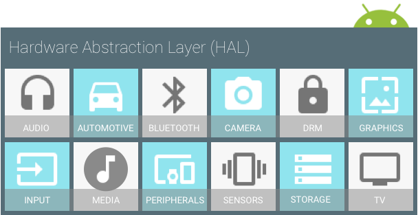

A HAL defines a standard interface for hardware vendors to implement, which enables Android to be agnostic about lower-level driver implementations. Using a HAL allows you to implement functionality without affecting or modifying the higher level system. HAL implementations are packaged into modules and loaded by the Android system at the appropriate time.
Figure 1. HAL components
You must implement the corresponding HAL (and driver) for the specific
hardware your product provides. HAL implementations are typically built into
shared library modules (.so files), but as Android does not mandate
a standard interaction between a HAL implementation and device drivers, you can
do what is best for your situation. However, to enable the Android system to
correctly interact with your hardware, you must abide by the
contract defined in each hardware-specific HAL interface.
To guarantee that HALs have a predictable structure, each hardware-specific
HAL interface has properties defined in
hardware/libhardware/include/hardware/hardware.h. This interface
allows the Android system to load correct versions of your HAL modules in a
consistent way. A HAL interface consists of two components: modules and devices.
A module represents your packaged HAL implementation, which is stored as a
shared library (.so file). The
hardware/libhardware/include/hardware/hardware.h header file
defines a struct (hw_module_t) that represents a module and
contains metadata such as the version, name, and author of the module. Android
uses this metadata to find and load the HAL module correctly.
In addition, the hw_module_t struct contains a pointer to
another struct, hw_module_methods_t, that contains a pointer to
an open function for the module. This open function is used to initiate
communication with the hardware for which the HAL is serving as an abstraction.
Each hardware-specific HAL usually extends the generic hw_module_t
struct with additional information for that specific piece of hardware. For
example, in the camera HAL, the camera_module_t struct contains a
hw_module_t struct along with other camera-specific function
pointers:
typedef struct camera_module {
hw_module_t common;
int (*get_number_of_cameras)(void);
int (*get_camera_info)(int camera_id, struct camera_info *info);
} camera_module_t;
When you implement a HAL and create the module struct, you must name it
HAL_MODULE_INFO_SYM. Example from the Nexus 9 audio HAL:
struct audio_module HAL_MODULE_INFO_SYM = {
.common = {
.tag = HARDWARE_MODULE_TAG,
.module_api_version = AUDIO_MODULE_API_VERSION_0_1,
.hal_api_version = HARDWARE_HAL_API_VERSION,
.id = AUDIO_HARDWARE_MODULE_ID,
.name = "NVIDIA Tegra Audio HAL",
.author = "The Android Open Source Project",
.methods = &hal_module_methods,
},
};
A device abstracts the hardware of your product. For example, an audio module can contain a primary audio device, a USB audio device, or a Bluetooth A2DP audio device.
A device is represented by the hw_device_t struct. Similar to a
module, each type of device defines a detailed version of the generic
hw_device_t that contains function pointers for specific features
of the hardware. For example, the audio_hw_device_t struct type
contains function pointers to audio device operations:
struct audio_hw_device {
struct hw_device_t common;
/**
* used by audio flinger to enumerate what devices are supported by
* each audio_hw_device implementation.
*
* Return value is a bitmask of 1 or more values of audio_devices_t
*/
uint32_t (*get_supported_devices)(const struct audio_hw_device *dev);
...
};
typedef struct audio_hw_device audio_hw_device_t;
In addition to these standard properties, each hardware-specific HAL interface can define more of its own features and requirements. For details, see the HAL reference documentation as well as the individual instructions for each HAL.
HAL implementations are built into modules (.so) files and are
dynamically linked by Android when appropriate. You can build your modules by
creating Android.mk files for each of your HAL implementations
and pointing to your source files. In general, your shared libraries must be
named in a specific format so they can be found and loaded properly. The naming
scheme varies slightly from module to module, but follows the general pattern
of: <module_type>.<device_name>.
For details on setting up the build for each HAL, see the HAL-specific documentation through the Porting section of this website.